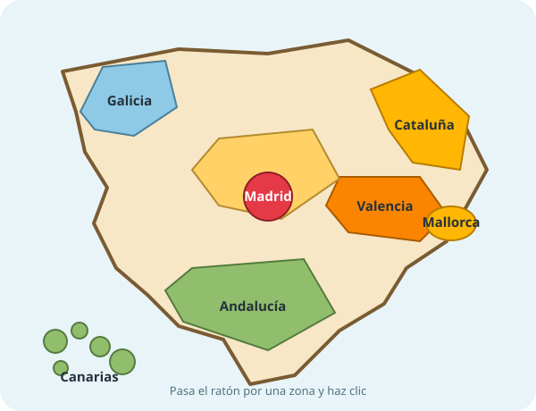

Mapa de imágenes de España
Define zonas clicables sobre un mapa con map y area. Al pasar el ratón debe aparecer el nombre del lugar y al hacer clic debe abrirse una página en una pestaña nueva.
Coordenadas: cada
area usa píxeles de la imagen original. Aquí el mapa mide 600 × 460. Las zonas son aproximadas para que puedas ver el mecanismo; en un mapa real se ajustan con una herramienta como image-map.net.
Zonas del mapa
| Lugar | Forma | Enlace |
|---|---|---|
| Galicia | Círculo | xunta.gal |
| Cataluña | Círculo | web.gencat.cat |
| Valencia | Círculo | valencia.es |
| Madrid | Círculo | madrid.es |
| Andalucía | Círculo | juntadeandalucia.es |
| Mallorca | Círculo | Wikipedia |
| Canarias | Círculo | Wikipedia |
Qué se practica
usemap="#nombre"<map name="nombre"><area shape="circle">coords="x,y,radio"altytitletarget="_blank"
Ver el código clave
<img src="mapa_espana.svg" alt="Mapa de España"
usemap="#mapa-espana" width="600" height="460">
<map name="mapa-espana">
<area shape="circle" coords="300,225,30"
href="https://www.madrid.es/" alt="Madrid" title="Madrid"
target="_blank" rel="noopener noreferrer">
<area shape="circle" coords="431,236,44"
href="https://www.valencia.es/" alt="Valencia" title="Valencia"
target="_blank" rel="noopener noreferrer">
</map>